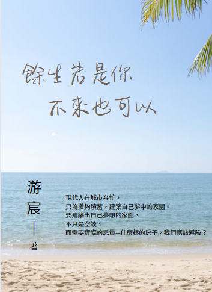

餘生若是你 不來也可以
作者：游宸
出版社：游X種子出版社
出版時間：2023/07/01
語言：繁體中文
定價：990元
簡介
現代人在城市奔忙，只為攢夠積蓄，建築自己夢中的家園。要建築出自己夢想的家園，不只是空談，而需要實際的思量——什麼樣的房子，我們應該避險？ 若餘生要交付予某些類型的房子，那真不如從來沒有，也就是說：「餘生若是你，不來也可以。」
潮濕陰暗，缺乏日照，空氣不流通
這樣的房子晦暗又反潮，讓人住在裡頭心情也好不起來，如同閱讀一個作家的作品，然而內容全是負面的無病呻吟，讓人讀來抑鬱，身心不暢。
地處偏遠，交通不發達
這樣的房子地處郊區，自己難出去，親朋也難到達，就像一個過度自我中心的人，與社會隔絕，不在乎他人感受，一個人排擠全世界。
外觀裝潢華麗，內裡海砂堆積
這樣的房子「金玉其外，敗絮其中」，像一篇文章堆砌了過度華麗的詞藻，然而捏起來卻沒有半分實貨，空洞而立基不穩。